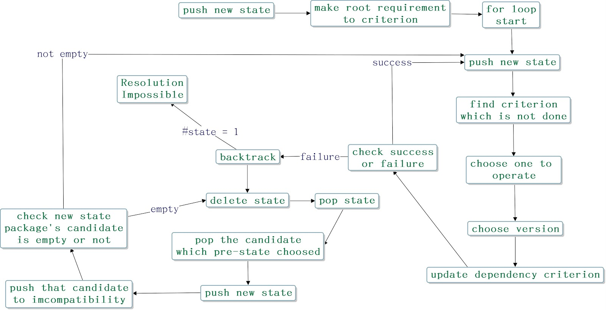

Welcome to our independent study project.
we are students from NCTU work on our project about version Solving Algorithm Pubgrub, and we also study pip's algorithm Resolvelib and make a comparision and some tests
Pubgrub Detail
Pubgrub has for important part 1.Unit propagation(find a specify package range) 2.Decision making (choose one version in range)3.Conflict resolution (if conflict,do that process)4.Error reporting--you can check more information in our slides

Resolvelib Detail
Resolvelib want to choose latest version and just linearly find package's version
